猩红修道院 · 章节演出对照
2026-09-30。先图后施工：保留真实道路、像素人物和纸板舞台透视，以斜格、人物特写与现场动作组织十二段流程。
上方四格是生成参考，下方是引擎在实际机位的受控渲染。参考中的人物大小、额外通路和天色不自动成为游戏事实。05—08参考人物偏大，实际仍使用既有角色比例。受控截图不代表自然通关；连续键鼠回放和完整差异记录见实施记录。
抵达与初次会面
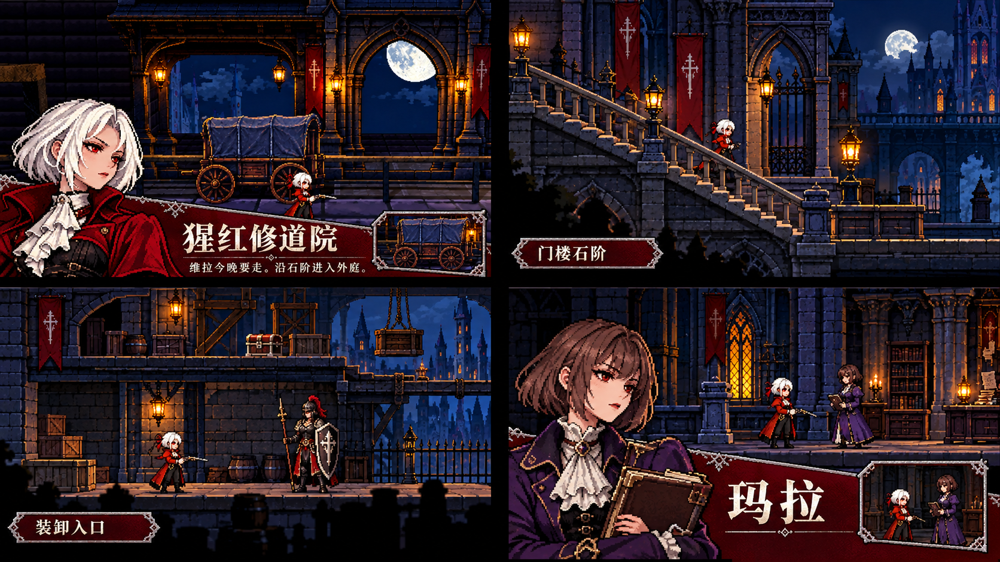
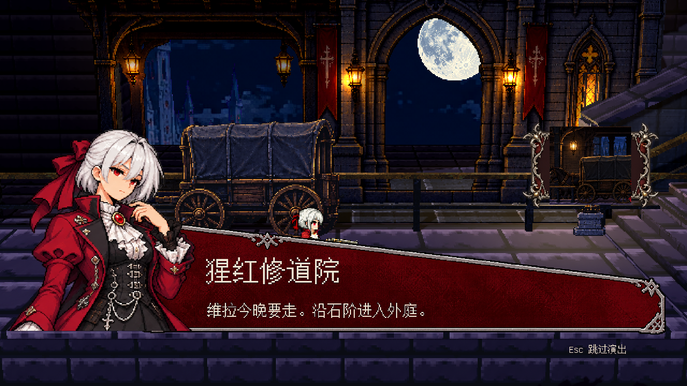
抵达 — 先留车厢与现场，再进入章节卡，结束交还操作。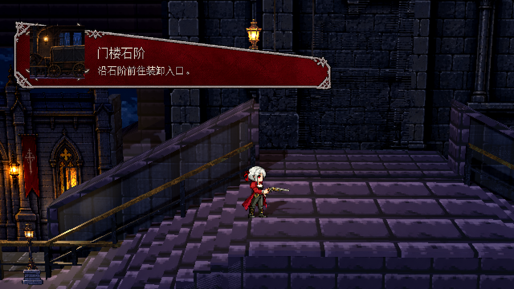
石阶 — 地点短卡不暂停步行。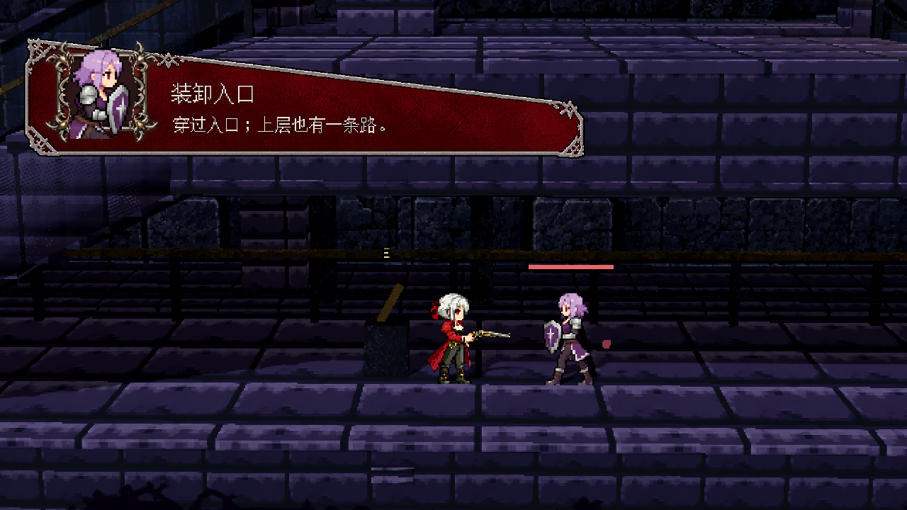
首场交锋 — 实际盾卫特写与上层通路提示，玩家仍能行动。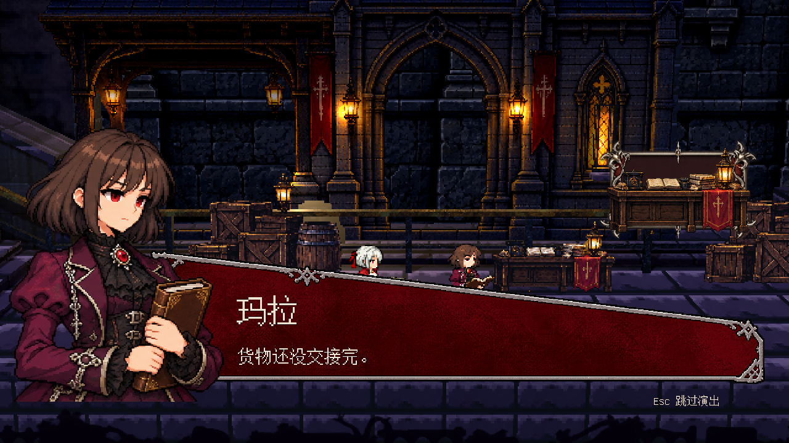
玛拉会面 — 现场翻账本后进入人物卡，继续逐句对白。初见、合作与路线结果
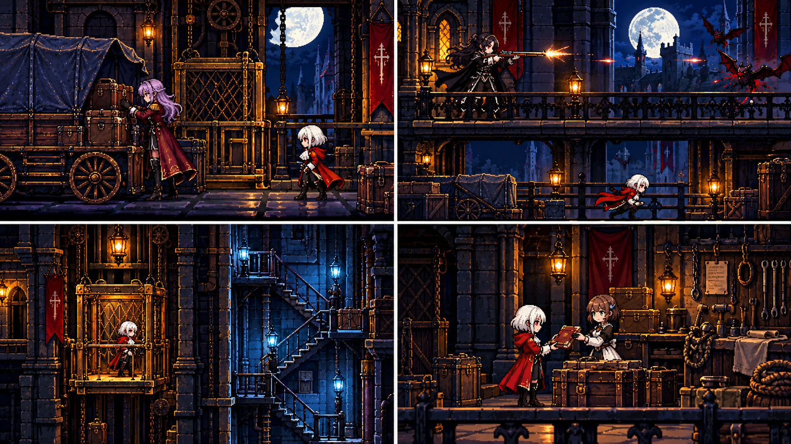
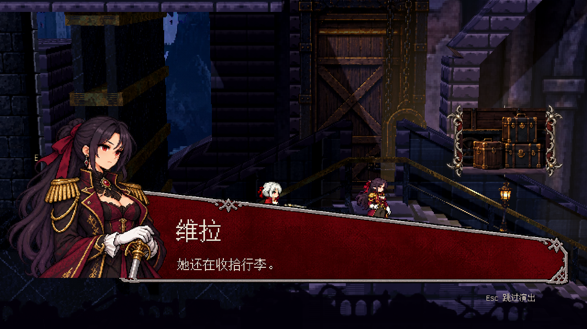
维拉初见 — 按箱扣、站起、人物卡；对白后沿既有路径离开。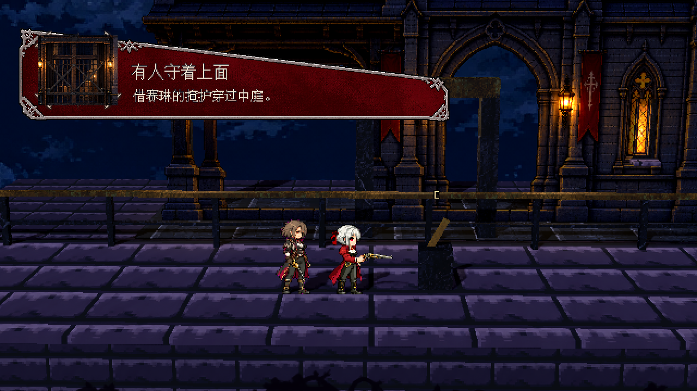
赛琳合作 — 实际掩护命中后显示短结果，不能仅靠近便算合作。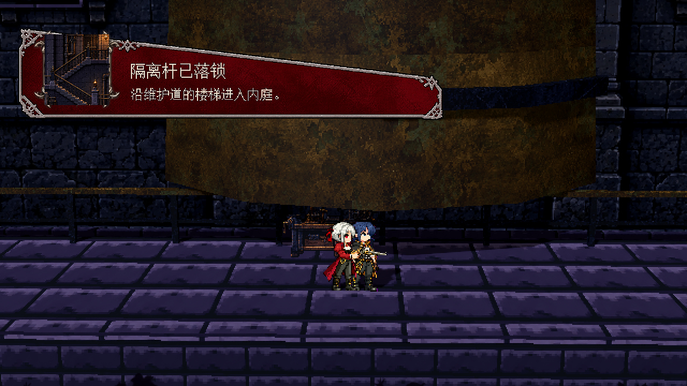
两条主路 — 货梯与维护道分别依据真实机关结果显示。此图是维护道。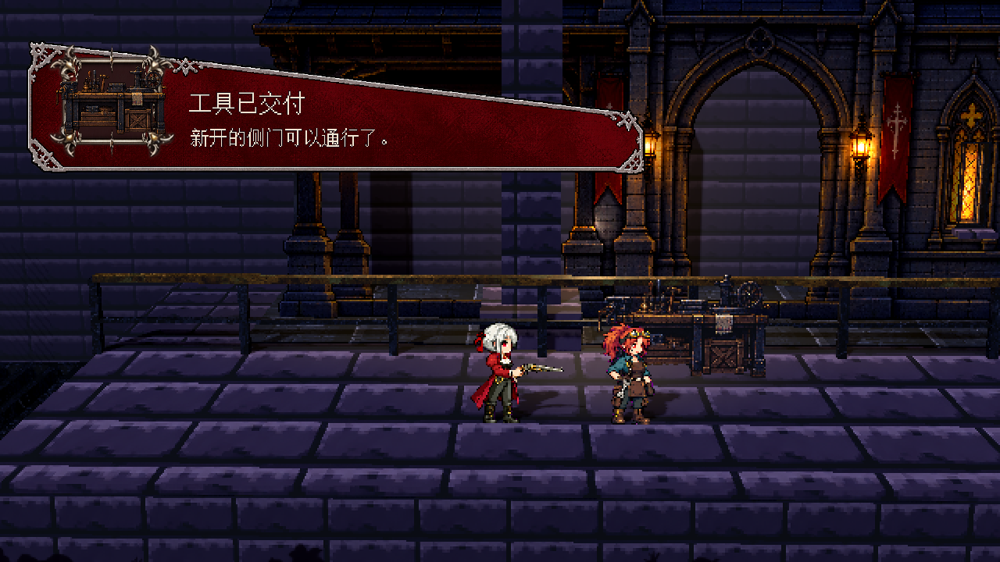
支线交接 — 先完成原有选择与回应，再给出一次结果。追猎与回访
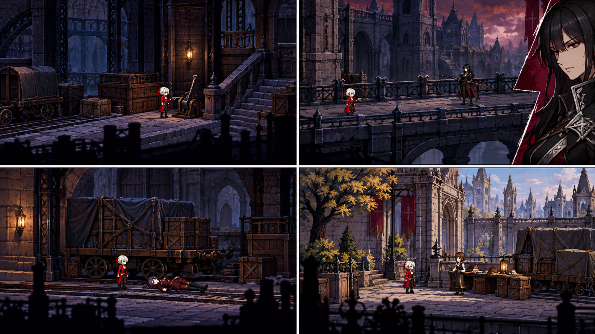
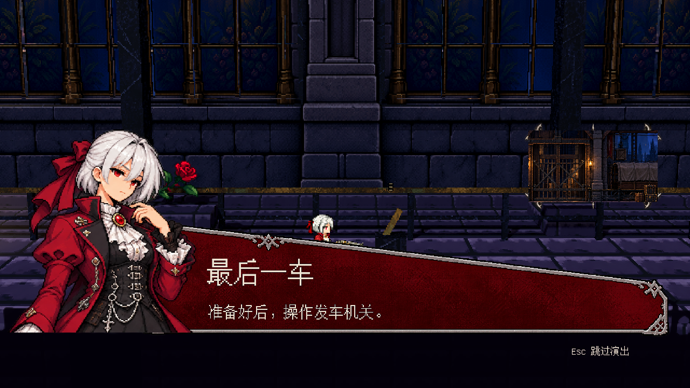
最后整备 — 字卡不替玩家发车；仍需主动操作机关，允许返回。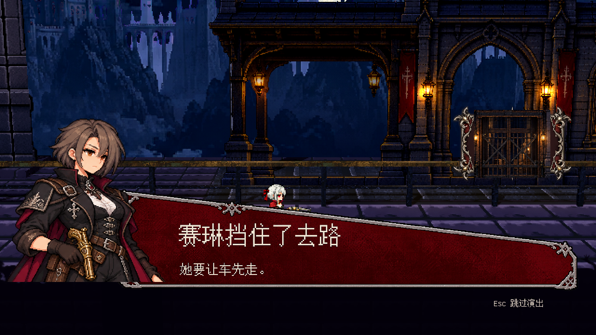
赛琳阻拦 — 安全落脚才演出；战后非致命对白与下一战之间有可操作间隔。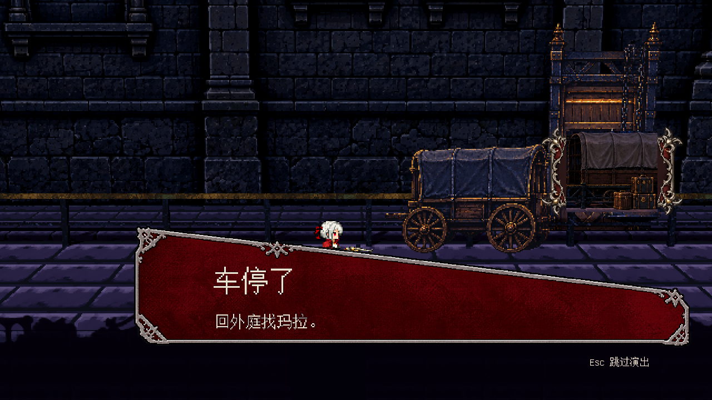
维拉决战之后 — 留出现场静默，不出现庆功式音乐或结算。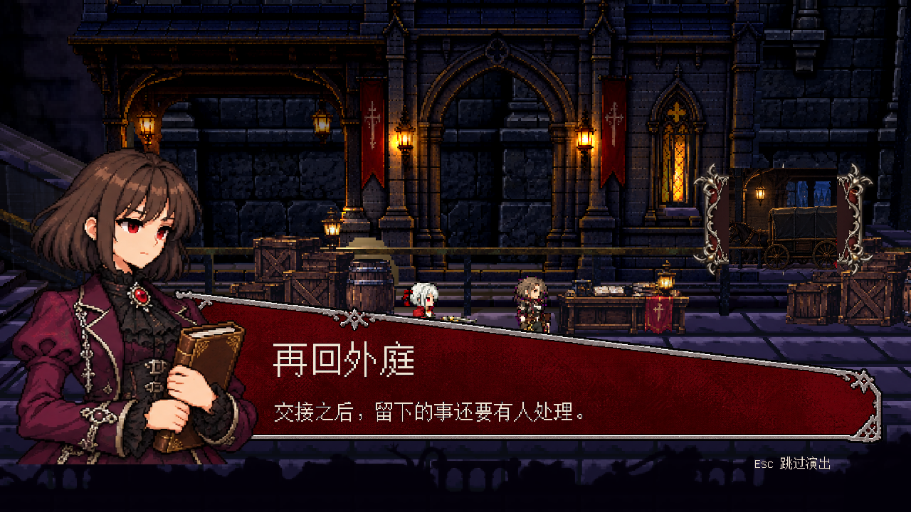
回到外庭 — 回访对白和演出结束后才进入章节页面。保持的边界
完整字卡在站稳、脱战时播放，先留0.75秒现场，再进入分格，总长3秒。普通短卡约1秒。中文、姓名与选项由原生UI排版，不烘焙进图片。既有地图连通和任务选择不因演出改变。
建筑的原图、近景补图、分层位置及三枪镜头巡检见清晰度施工目录。生成图中的独特高拱、管线和天空色调仍有差异，不能视为全部还原。